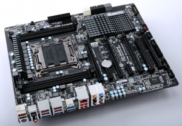
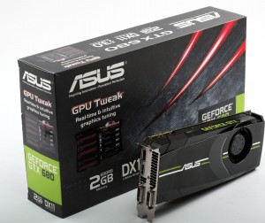
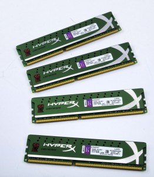
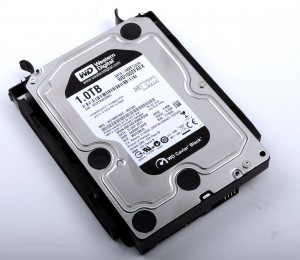
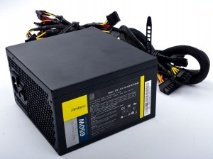
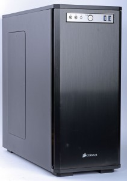

Important Parts of a PC
Motherboard
The motherboard is the base for every computer. It is what holds all the parts together and then placed inside the computer case.
CPU

The CPU is basically the brain of the computer. The CPU sends signals to control the other parts of the computer that performs calculations, actions, and runs programs.
GPU
The GPU is used primarily for 3D applications. It is a single-chip processor that creates lighting effects and transforms objects every time a 3D scene is redrawn. Especially in gaming having a high quality GPU is important for maintaining high framerate for smooth gaming performance.
Memory/RAM
RAM is essentially your device's short-term memory. It temporarily stores everything that runs on your PC, like all the services in Windows, your web browser, your image editing tool, or the game you're playing
Hard Drive
Somewhat similar to the RAM the hard drive's main function is to permanently store all personal data that includes pictures, music, videos, documents, and programs.
PSUy
Also known as power supply, The PSU is the component that supplies power to a computer.
Computer Case
The Computer case is the housing for all the components after they have been assembled on the motherboard. Picking a good case is important because different cases can have better airflow than others which is important for keeping the computer from overheating. Plus some cases are not compatible with certain parts.